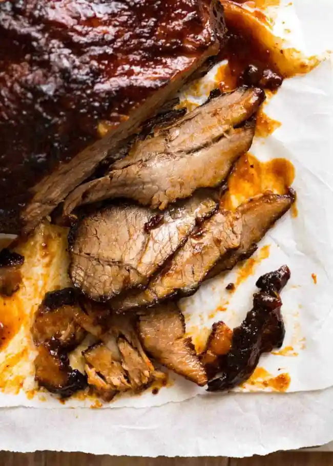

Slow Cooker Beef Brisket

Description and Top Tips
Beef brisket is a large, tougher cut of meat that needs to be cooked low and slow to get extra-tender and flavorful. You can do this indirectly on the grill, in the slow-cooker, or in the oven (like we did here). How long does beef brisket take to cook?Our foolproof ratio is 18 minutes per pound. Ovens can vary, though, so to really be sure your brisket is cooked through and tender, check with a fork towards the end. Poke it into the middle—the fork should go through the meat easily, with no resistance.
Season early and season well. Go for kosher salt and freshly ground black pepper (no shakers here!) to maximize flavor. Take your brisket out of the fridge, season generously on all sides, and leave it out until it gets to room temperature to begin the tenderizing process. Think dry brine, but easier.
Choose the right roasting pan. Grab your largest, heaviest, high-sided pan. A disposable pan is okay if it's all you've got, but a heavy duty one will ensure even cooking and caramelization.
Fat is your friend. Always roast fat-side-up. The fat acts as a self-baster, dripping onto the brisket itself and the potatoes, allowing everything to braise. You don’t want too much fat, though, or things could get greasy. If you have more than ⅛ inch of fat, trim it.
Ingredients
- 4 large garlic cloves, smashed
- 1/2 teaspoon kosher salt, plus more for seasoning
- 4 sprigs fresh rosemary, needles striped from the stem and chopped
- 1/4 cup extra-virgin olive oil
- 1 (4 pound) beef brisket, first-cut
- Coarsely ground black pepper
- 4 large carrots, cut in 3-inch chunks
- 3 celery stalks, cut in 3-inch chunks
- 4 large red onions, halved
- 2 cups dry red wine
- 1 (16-ounce) can whole tomatoes, hand-crushed
- 1 handful fresh flat-leaf parsley leaves
- 3 bay leaves
- 1 tablespoon all-purpose flour (optional)
- Potato Pancakes, recipe follows
Steps
- Preheat the oven to 325 degrees F.
- On a cutting board, mash the garlic and 1/2 teaspoon of the salt together with the flat-side of a knife into a paste. Add the rosemary and continue to mash until incorporated. Put the garlic-rosemary paste in a small bowl and add 2 tablespoons of olive oil; stir to combine.
- Season both sides of the brisket with a fair amount of kosher salt and ground black pepper. Place a large roasting pan or Dutch oven over medium-high flame and coat with the remaining olive oil. Put the brisket in the roasting pan and sear to form a nice brown crust on both sides. Lay the vegetables all around the brisket and pour the rosemary paste over the whole thing. Add the wine and tomatoes; toss in the parsley and bay leaves. Cover the pan tightly with aluminum foil and transfer to the oven. Bake for about 3 to 4 hours, basting every 30 minutes with the pan juices, until the beef is fork tender.
- Remove the brisket to a cutting board and let it rest for 15 minutes. Scoop the vegetables out of the roasting pan and onto a platter, cover to keep warm. Pour out some of the excess fat, and put the roasting pan with the pan juices on the stove over medium-high heat. Boil and stir for 5 minutes until the sauce is reduced by 1/2. (If you want a thicker sauce, mix 1 tablespoon of flour with 2 tablespoons of wine or water and blend into the gravy).
- Slice the brisket across the grain (the muscle lines) at a slight diagonal. Serve with potato pancakes.